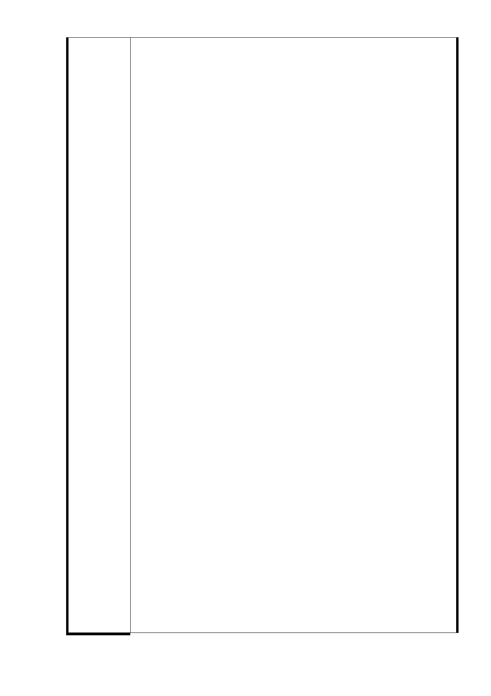

臺北市政府103年4月22日府授都規字第10332566700號函
主旨：有關 貴公司函請臺北市都市計畫委員會停止辦理廣慈博
愛園區都市計畫案之相關審議及核定程序一案，復如說
明，請查照。
說明：
一、復 貴公司103年3月31日柏廣字第10303008號函。
二、有關「民間參與廣慈博愛園區興建及營運案」，本府業以
103年2月18日府社綜字第l0331141100號府授社綜字第
103年3月14日府授社綜字第10333056100號函復說明在案
（諒達），該案係因貴公司未依契約規定如期取得第一期
土地之建造執照，延宕社福設施開發興建與推動期程，違
約情事重大，本府已於100年8月23日函知 貴公司終止契
約在案（府社綜字第10040737800號函正本諒達）。且經中
華民國仲裁協會於102年2月25日作成101年度仲聲和字第
007號仲裁判斷，命貴公司應塗銷第一期土地之地上權登
記，本府並已於10 2年3月5日依仲裁判斷予以塗銷 貴公
司之土地地上權登記在案， 貴公司並未於仲栽判斷交付
或送達之日起30日內提出撤銷仲裁判斷之訴，故前述仲裁
判斷業已確定。
市 府 回 應 三、至有關 貴公司來函說明三所提本府應續行配合辦理 貴
意見
公司提出之都市設計審議、樹木保護計畫及環境影響評估
三項行政審查程序之申請一節，本府回應如下：
（一）涉及都市設計及土地使用開發許可審議部分，本府業以
103年4月8日府都設字第10330023900號函復說明本府
於102年6月5日取回土地權屬， 貴公司已無權對土地
作任何主張，故不得申請都市設計及土地使用開發許可
審議程序。
（二）涉及樹木保護計畫暨移植與復育計畫審查部分，本府業
以103年4月10日府授文化資源字第10330606600號函復
說明目前土地係為本府所有， 貴公司已無權對土地作
任何主張，自無法進行開發行為，故 貴公司所提送之
樹木保護計畫暨移植與復育計畫，已失所據，本府礙難
辦理。
（三）涉及環境影響評估審查部分，本府業以103年4月15日府
環技字第10331841900號函復說明本府已依仲裁判斷取
回土地，爰 貴公司已無權對該土地作任何主張，亦無
權就旨揭開發案提送環境影響評估申請。
四、綜上，本府已於102年6月5日取回土地，該系爭土地於法
於理均係本府所有， 貴公司已無權對該土地作任何主
張。
- 89 -